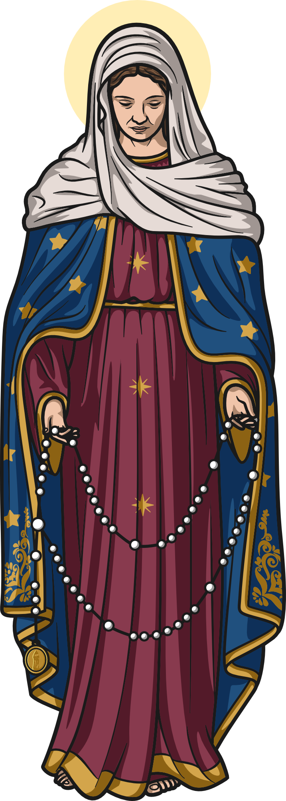

Santo Terço
Rezar o Terço em Tempo Real
Selecione o mistério contemplado para recolher seu coração e iniciar sua oração passo a passo.
Orações Iniciais
Sinal da Cruz
Texto da oração
Você pode usar a barra de espaço ou deslizar para o lado para rezar

Devoção Concluída
Glória a Deus
Você concluiu com fidelidade a meditação do Santo Terço. Que a Mãe de Deus interceda continuamente pelas suas intenções, pela sua família e pelo seu caminho de santidade.